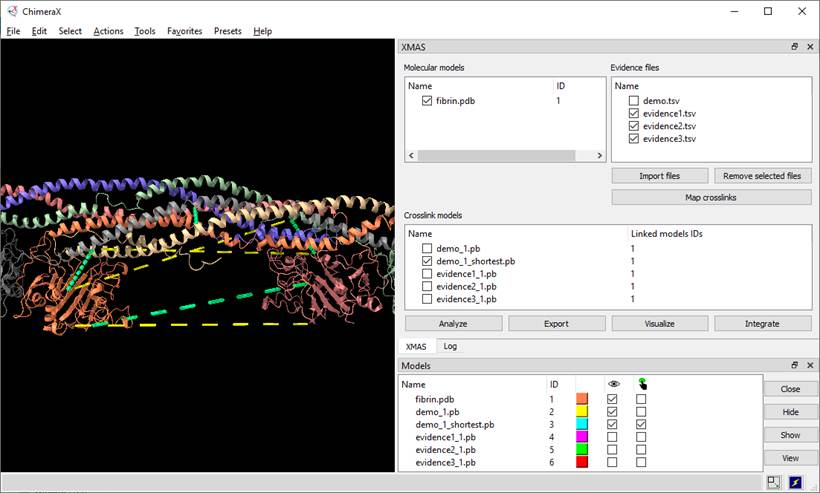
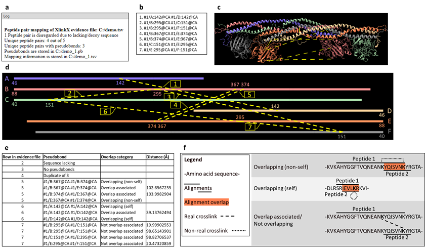
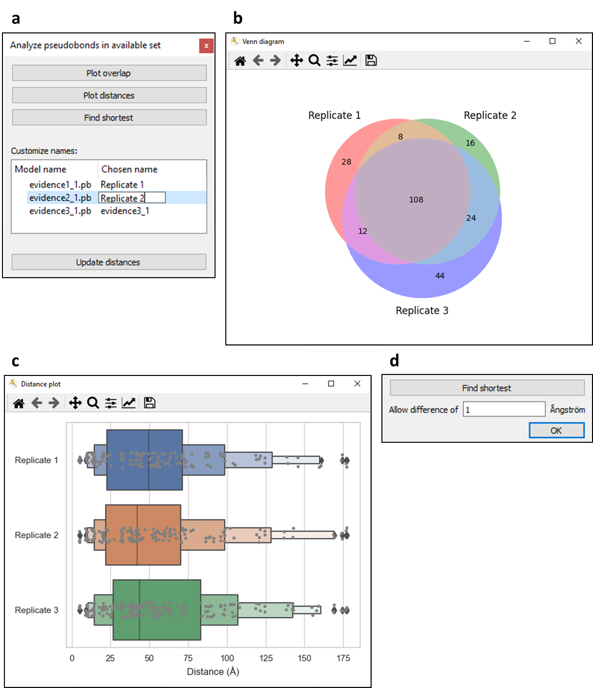
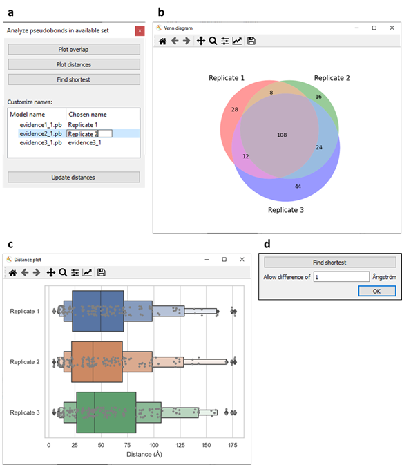
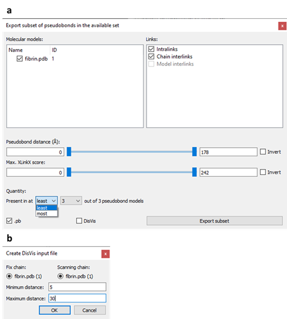
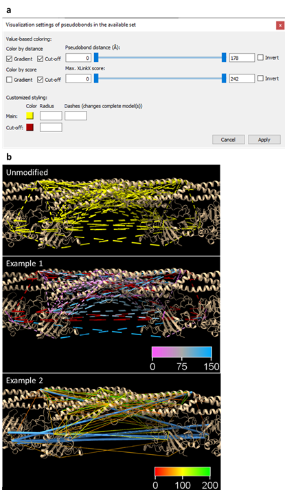
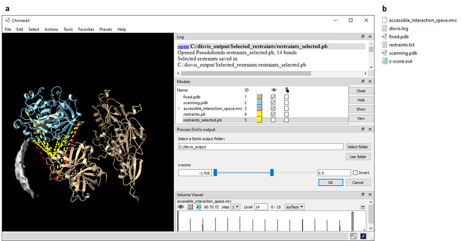

XMAS User Manual
Scheltema Lab, 1
April 2022
r.a.scheltema@uu.nl
https://github.com/ScheltemaLab
Contents
1. About this manual 4
2. Dictionary. 4
3. Abbreviations. 5
4. Introduction to XL-MS. 6
5. Setting up. 6
5.1. Installing ChimeraX. 6
5.2. Installing XMAS. 6
5.3. Opening the main window.. 7
5.3.1. Opening using the GUI 7
5.3.2. Opening using the command line. 7
5.4. Positioning the main window.. 7
6. Managing models. 9
6.1. The XMAS model panels. 9
6.2. Opening and closing models. 9
6.3. Selecting crosslink models. 9
7. Managing evidence files. 9
8. Mapping crosslinks. 9
8.1. Creating crosslink models. 9
8.2. Interpreting the mapping log. 10
8.3. Interpreting the PB file. 10
8.4. Interpreting the mapping information file. 10
8.4.1. Reference to peptide pair. 10
8.4.2. Pseudobond 11
8.4.3. Overlap category 11
8.4.4. Distance (A) 11
9. Analyzing crosslinks. 13
9.1. Plotting overlap. 13
9.2. Plotting distances. 13
9.3. Finding shortest PBs. 13
9.3.1. Rationale. 13
9.3.2. Procedure. 13
9.4. Customizing names. 13
9.5. Updating distances. 13
10. Exporting crosslinks. 14
10.1. Specifying subset. 15
10.1.1. Molecular models. 15
10.1.2. Crosslink type. 15
10.1.3. Distance. 15
10.1.4. Confidence score. 15
10.1.5. Quantity. 15
10.2. Specifying file format. 16
10.2.1. PB file. 16
10.2.2. DisVis restraints file. 16
11. Visualizing crosslinks. 17
11.1. Value-based coloring. 17
11.1.1. Gradient coloring. 17
11.1.2. Cut-off coloring. 17
11.2. Customized styling. 17
11.3. Examples. 17
12. Integrative modeling. 18
12.1. Selecting an output folder. 19
12.2. Reading and opening relevant content. 19
12.3. Interactive visualization of restraint parameters. 19
12.3.1. Distances. 19
12.3.2. Z-scores. 19
12.4. Z-score based restraints selection. 19
13. Recurring principles. 21
13.1. Available set. 21
13.2. Cut-off slider. 21
13.3. DisVis job. 21
14. References. 21
This manual explains
how to use XMAS, or Cross(X)link Mapping and AnalySis,
a tool for downstream analysis and visualization of crosslinking mass
spectrometry (XL-MS) data. XMAS is a bundle for the molecular visualization
software UCSF ChimeraX (hereafter called ChimeraX)1. The information about ChimeraX that is
required to understand this manual is provided. For further information about
ChimeraX, please visit the ChimeraX web page.
-
Accessible interaction space (DisVis) area representing the collection of the centers-of-mass of all
scanning chain positions for a given number of consistent restrains.
-
Atom name name used in ChimeraX to refer to a type of
atom.
-
Atom specifier string set of characters used to refer to an atom
in a ChimeraX session. Atom specifier strings are formatted as follows: #w/x:y@z,
where w represents the model ID, x represents the chain ID, y
represents the residue number, and z represents the atom name.
-
Available set (pseudobonds) regarding XMASs Analyze, Export, and Visualize windows, the available set refers to the pseudobonds that were selected at the moment that the
button to open the window was clicked.
-
Chemical linker in crosslinking mass spectrometry, a
chemical linker is a compound that harbors the potential to covalently bind to
two protein residues, thereby linking these residues to each other.
-
Confidence score numerical value reflecting the likelihood
that an identified crosslink is a true positive.
-
Consistent restraint (DisVis) a crosslink with a distance that is
consistent with the distance restraint.
-
Crosslink two peptides, covalently linked by a
chemical linker.
-
Crosslink models graphical models representing a collection of crosslinks.
-
Distance (crosslink/pseudobond) the length of the crosslink or pseudobond.
-
Distance restraint known distance or range of distances between
two atoms.
-
DisVis webserver for analyzing the information
content of distance restraints between two molecular models.
-
Evidence file file containing identified crosslinks. From
this file, XMAS uses the peptide amino acid sequences, positions of the
crosslinked residues, and confidence scores.
-
Fixed chain
(DisVis) term assigned to one of the two molecular models in a DisVis job. The other model is called the scanning chain.
-
ID
o
Chain ID unique alphabetical code that refers to a
chain in a ChimeraX model.
o
Model ID unique numerical code that refers to a
ChimeraX model open in the session.
-
Interlink (general) crosslink connecting residues belonging to
different proteins.
-
Interlink (XMAS)
o
Chain interlink pseudobond
connecting atoms that belong to different chains of the same ChimeraX model.
o
Model interlink pseudobond
connecting atoms that belong to different ChimeraX models.
-
Intralink (general) crosslink connecting residues belonging to
the same protein.
-
Intralink (XMAS) pseudobond connecting two atoms in the same
ChimeraX chain.
-
Linked model model that contains one or more crosslinked
residues; each crosslink model has one or more linked models.
-
Mapping aligning the peptide amino acid sequences
from peptide pairs in evidence files to the amino acid sequences of molecular
models, and thereby determining possible positions of crosslinks.
-
Mapping information file tab-delimited file (extension .tsv) generated for each evidence file that was mapped with
XMAS, containing mapping results for each peptide pair.
-
Molecular models graphical models representing molecules.
-
Overlap associated when the sequence alignments of both
peptides of a peptide pair on a molecular model do not overlap, but
combinations of overlapping alignments have been found for the particular
peptide pair.
-
Overlapping (non-self) when the sequence alignments of both
peptides of a peptide pair on a molecular model overlap in such a way that the
crosslinked residues of the peptides are different, as opposed to identical (as
in the overlapping (self) category).
-
Overlapping (self) when the sequence alignments of both
peptides of a peptide pair on a molecular model overlap in such a way that the
crosslinked residues of the peptides are identical, as opposed to different (as
in the overlapping (non-self) category).
-
Peptide pair the two peptides in a crosslink.
-
pLink search engine to identify crosslinks from experimental crosslinking
mass spectrometry data.
-
Proteome Discoverer search engine to identify crosslinks from
experimental crosslinking mass spectrometry data.
-
Pseudobond graphical component in ChimeraX, visualizing
the shortest possible trajectory between two specific atoms as a line (often
dashed).
-
Pseudobond file ChimeraX readable file (extension .pb) to save pseudobonds
and reopen them as a pseudobonds model in a ChimeraX
session.
-
Pseudobond specifier string the atom specifier strings of the two atoms
that are connected by a pseudobond, separated by a
space.
-
Residue number the index of a residue in the amino acid
sequence of a ChimeraX chain.
-
Restraints file (DisVis) file (extension .txt) containing the pseudobonds and the distance restraints applicable to them
that can be used as input in a DisVis job.
-
Scanning chain
(DisVis) term assigned to one of the two molecular models in a DisVis job. The other model is called the fixed chain.
-
Selflink theoretical situation in which a chemical
linker attaches to the same residue twice.
-
Xi search engine to identify crosslinks from
experimental crosslinking mass spectrometry data.
-
XlinkX node that can be incorporated into Proteome
Discoverer, to identify crosslinks from experimental crosslinking mass
spectrometry data.
-
Z-score (DisVis) score reflecting the
likelihood that a restraint is a false-positive.
-
Å Ångström
-
PB pseudobond
-
PD Proteome Discoverer
-
PDB Protein Data Bank
-
XL-MS crosslinking mass spectrometry
-
XMAS Cross(X)link Mapping and AnalySis
4. Introduction to XL-MS
In XL-MS, protein
residues are covalently linked, or crosslinked together by adding chemical
linkers (Figure 1). Since chemical linkers with
known lengths are used, this provides distance restraints between the crosslinked
residues, yielding structural information. To obtain the distance restraints,
the crosslinked proteins are digested, yielding short fragments called
peptides. As the covalent chemical linkage remains intact during the digestion,
part of the peptides is crosslinked to other peptides2,3. A chemical linker connecting two peptides is
called a crosslink, and the connected peptides are called a peptide pair2. After the digestion, samples are measured
using mass spectrometry. Subsequently, the resulting spectra are analyzed with
a search engine to identify the crosslinks. For each of the peptides in a
peptide pair, the amino acid sequence, and the crosslinked residue (i.e., the
residue that the chemical linker is attached to) are determined. Thereby, the
location of each crosslinked residue in its protein is found. Crosslinks within
a protein, called intralinks, provide information on
tertiary structure, whereas crosslinks between proteins, called interlinks,
provide information on the quaternary structure of protein complexes2,3. The search engine additionally calculates a
confidence score for each crosslink2-4.

Figure 1. Basic XL-MS workflow.
Adapted from Klykov et al.2. Created with BioRender.com.
To use XMAS, users
must install ChimeraX and XMAS, and the XMAS main window must be opened. Changing
the main windows position is optional.
5.1.
Installing ChimeraX
Before XMAS can be
installed, ChimeraX (version 1.3 or higher) should be installed on the machine
used. Instructions for installation of ChimeraX can be found here.
5.2.
Installing XMAS
XMAS can be installed
on ChimeraX using the ChimeraX toolshed.
XMAS is also
distributed as a folder, which can be downloaded from GitHub. One of
the items in this folder is the file INSTALL.txt, which
contains instructions to install XMAS manually on ChimeraX.
5.3.
Opening the main window
The XMAS main window
can be opened in any ChimeraX session, using the ChimeraX Graphical
User Interface (GUI) or
command line. The general layout of the main window is
shown in Figure 2.
5.3.1.
Opening using the GUI
In the menu bar,
navigate to Tools à Structure
Analysis à XMAS.
5.3.2.
Opening using the command line
Command line: execute
the command ui tool show XMAS. Commands are
executed by typing them in the ChimeraX command line interface and pressing
Enter.
5.4.
Positioning the main window
The XMAS main window
can be positioned anywhere on screen using dragging and dropping. It can also
be docked on all sides of the ChimeraX main window and on other tool windows.

Figure 2. Layout of the XMAS main window
in a ChimeraX session.
The ChimeraX Toolbar and Command Line Interface, tools
that are shown by default, are hidden for clarity. XMAS is docked on the
ChimeraX Log. Six models are open in the session: fibrin.pdb, demo_1.pb,
demo_1_shortest.pb,
evidence1_1.pb,
evidence2_1.pb,
and evidence3_1.pb.
The first, fibrin.pdb,
is a dimeric model of the protein fibrin. Since a fibrin monomer consists of
three chains, the model consists of six chains, each colored distinctly. The
remaining models are pseudobond models linked to fibrin.pdb.
Only fibrin.pdb,
demo_1.pb,
and demo_1_shortest.pb
are displayed; the other models are hidden. The selected model is demo_1_shortest.pb.
Four files have been imported in XMAS: demo.tsv, evidence1.tsv,
evidence2.tsv,
and evidence3.tsv.
XMAS interacts with
ChimeraX to enable managing molecular and crosslink models in the XMAS model panels.
This interaction involves opening and closing both models types, and selection of
crosslink models.
6.1.
The XMAS model panels
The XMAS main window
contains two model panels: the Molecular models panel on the top left and the
Crosslink models panel below (Figure 2). These
panels contain information on models relevant for XMAS; the Molecular models
panel contains the names and IDs of molecular models open in the ChimeraX
session, and the Crosslink models panel contains the names and Linked models
IDs of the crosslink models open in the session.
6.2.
Opening and closing models
When opening a
molecular or crosslink model in the ChimeraX session, the model information
automatically appears in the correct XMAS model panel. NB for a model to appear
in Crosslink models, its name needs to end with .pb. Closing a model in the
ChimeraX session removes it from its XMAS model panel.
6.3.
Selecting crosslink models
When the checkbox of a
model in Crosslink models is checked or unchecked, it is automatically
selected in the ChimeraX session, and vice versa. The advantage of selecting in
Crosslink models, as opposed to the ChimeraX Models window, is the
possibility to select multiple models simultaneously.
7.
Managing evidence files
Clicking Import
files underneath the Evidence files panel opens a dialog where one or more
evidence files can be selected, which then appear in the panel. Files are
removed from the panel by selecting their name (not the checkbox) and,
subsequently, clicking Remove selected files.
XMAS currently
supports evidence files generated with the search engines XlinkX for Proteome Discoverer (PD), Xi, and pLink, in csv, tsv, txt,
and xlsx format. Additionally, mzIdentML files (mzid format)
are supported.
8.
Mapping crosslinks
XMAS enables mapping
the crosslinks in any number of evidence files on any number of molecular
models. For each evidence file, a mapping
log and mapping information file are created. Moreover, if crosslinks could be mapped onto the
structure(s), a crosslink model and PB
file are generated.
8.1.
Creating crosslink models
To select the
molecular models and evidence files to use for mapping, their checkboxes are
checked in the Molecular models and Evidence files panel, respectively.
Clicking Map crosslinks then initiates sequence alignment of all peptide
pairs in all checked evidence files to all checked molecular models. If at
least one perfect alignment has been found for each peptide in a peptide pair, pseudobonds (PBs) are generated; one PB for each
combination of these perfect alignments. For more information, see 8.4. Interpreting the mapping information file. All PBs are grouped in PB models; one model
per mapped evidence file. The name of a PB model is equal to name_IDs.pb,
where name represents the name of the evidence file, and IDs represent
the ID or IDs of the model or models it was mapped to. Consequently, the PB
model created by mapping demo.tsv
on fibrin.pdb is called demo_1.pb,
because the ID of fibrin.pdb is 1 (Figure 2). Created files (PB
files and mapping information files) are stored in the same location as the evidence file. The file names
are identical to the names of the corresponding PB model, where the .pb
extension is replaced with .tsv for the mapping
information file.
8.2.
Interpreting the mapping log
For each mapping job,
a log is displayed in the ChimeraX Log window (Figure 3a).
The mapping log contains the following pieces of information (items marked with
an asterisk (*) are only included when applicable):
-
Evidence
file Peptide pair mapping
of engine evidence file: file, where engine represents
the search engine used to generate the evidence file mapped in the current
mapping job, and file represents the path to that evidence file.
-
*Lacking/decoy
sequence x Peptide pairs are disregarded due to lacking/decoy
sequence, where x represents the number of peptide pairs with a
lacking/decoy peptide sequence. These peptide pairs are ignored in the mapping
procedure. This remark is excluded if all peptides contained sequence
information.
-
Unique
peptide pairs Unique
peptide pairs: x out of y, where x represents the number
of unique peptide pairs, and y represents the total number of peptide
pairs in the evidence file. The difference between both numbers equals the
number of duplicate peptide pairs. No PBs are formed for these peptide pairs.
-
Peptide
pairs with PBs Unique
peptide pairs with pseudobonds: x, where x
represents the number of peptide pairs for which PBs have been found.
-
*PB file Pseudobonds are stored in file, where file represents
the path to the PB file generated for the current mapping job. This remark is
only included if PBs were created in this mapping job.
-
*Mapping information file Mapping
information is stored in file, where file represents the path to
the mapping information file generated for the current mapping job. This remark
is only included if PBs were created in this mapping job.
8.3. Interpreting the PB
file
The PB file is
especially useful to open PBs in another session than the session in which they
were created. Each line in the file is a PB specifier string, representing one
PB (Figure 3b-d). XMAS connects the α carbon atoms of the
crosslinked residues. Therefore, the atom names for the two atoms in the string
is CA; the ChimeraX code for α carbon. NB besides PB specifier strings, PB
files might contain additional information. Firstly, comment lines starting
with a semicolon (;) might be present. Secondly, additional information can
be included after the PB specifier. This additional information is explained in
the ChimeraX User Guide.
8.4. Interpreting the
mapping information file
The mapping
information file enables tracing back the mapping results to the peptide pairs
in the evidence file. Each peptide pair in the evidence file gets one or more
rows in the information file (Figure 3e). Each row
has four columns: Reference to peptide pair, 'Pseudobond', 'Overlap category', and 'Distance
(A)'.
8.4.1. Reference to peptide pair
Column that refers to
the peptide pair in the evidence file. The type of reference depends on the
evidence file format and can be inferred from the column header.
8.4.2.
Pseudobond
Can contain four types
of data:
-
Sequence
lacking/decoy, if a peptide
sequence was lacking or served as decoy for this peptide pair in the evidence
file.
-
No pseudobonds,
if no PBs were found for this peptide pair, even though peptide sequence
information was available.
-
Duplicate
of x, where x
represents the identical peptide pair.
-
A PB
specifier string, specifying a PB that belongs to this peptide pair. All
PBs belonging to one peptide pair get one row, meaning that peptide pairs with
multiple PBs will get multiple rows. For example, peptide pair 7 in Figure 3e has four PBs, since there is one PB for each of
the four combinations of chains; B to C, B to F, C to E, and E to F.
8.4.3. Overlap category
Can contain four types
of data:
-
No data, when no PBs were found for a peptide pair.
-
Overlapping
(non-self), for PBs between
two residues that result from overlapping alignments (Figure
3f). In reality, residues cannot be shared between the two peptides of a
pair. Hence, PBs in this category are excluded from the PB model. However,
unlike PBs of the overlapping (self) category, Overlapping (non-self) PBs
can be opened in a ChimeraX session by storing their specifier strings in a PB
file and opening this file in ChimeraX.
-
Overlapping
(self), for PBs that result
from overlapping alignments and that attach to the same residue twice, i.e., selflinks (Figure 3f). Like PBs
of the overlapping (non-self) category, these PBs are excluded from the PB
model, because selflinks do not occur in reality.
Since ChimeraX does not support formation of a PB that links an atom to itself,
it is impossible to open PBs of the overlapping (self) category in ChimeraX.
-
Overlap
associated, when the PB
belongs to a peptide pair for which overlapping alignments were found, but the
PB itself does not result from overlapping alignments (Figure
3f). For example, peptide pair 5 in Figure 3e
has two PBs from overlapping alignments, where both peptides are aligned on
chain B, or both on chain E. However, this peptide pair also has two PBs from
non-overlapping alignments, where one peptide is aligned on chain B, and the
other on chain E, and vice versa. Given that peptide pair 5 has both
overlapping and non-overlapping alignments, the PBs from non-overlapping
alignments are categorized as Overlap associated.
-
Not
overlap associated, when the
PB belongs to a peptide pair for which no overlapping alignments were found (Figure 3f).
8.4.4.
Distance (A)
The distance between
the atoms linked by a PB at the moment that Map crosslinks was clicked, in Ångström
(Å). Distances are only shown for non-overlapping PBs, since only these are
included in the PB model. The distance column can be updated.

Figure 3. Mapping job of a PD
evidence file on a molecular model.
a. The mapping log. b. Lines in the
generated PB file. Note that the line numbers are not present in actual PB
files. c.
The molecular model with the generated PB model in ChimeraX. d.
Schematic representation of b and c. The six chains
from the molecular model in c are depicted as continuous lines with corresponding
colors. Chains A-C are shown in a left-to-right orientation, and chains D-F in
a right-to-left orientation. Chain IDs and the first residue numbers are
depicted at the start of each chain. PBs are displayed as yellow dashed lines
between chain residues, of which the residue numbers are visualized. The
numerical labels on the PBs correspond to the line numbers in b.
e.
The mapping information file. f. Schematic examples of the three
overlap categories in e.
9.
Analyzing crosslinks
To analyze a set of
PBs (the available set), these PBs are selected and the Analyze
button in the XMAS main window is clicked, which opens the Analyze window (Figure 4a). This window provides four functions: plotting overlap
between multiple PB models, plotting distances, finding the shortest PBs per peptide pair, and updating distances
in the mapping information file. Moreover, the Analyze window enables customizing the
names used for plot labels and generated models. Created plots can be saved by
clicking the save icon in the plot window.
9.1. Plotting overlap
Clicking Plot
overlap visualizes the overlap between PB models in a Venn diagram. A circle
is drawn for each of the models. The overlap between the circles represents
overlap between the models. The numbers represent the number of unique PBs in a
subset. For example, in Figure 4b, 28 PBs are only
present in Replicate 1, whereas 8 PBs are shared between Replicate 2 and Replicate
3, and 108 PBs are present in all three replicates.
9.2. Plotting distances
Clicking Plot
distances plots the distances of the PBs in the available set in a box plot
combined with a strip plot (Figure 4c). Data are
grouped per PB model. The plot can be saved by clicking the save icon in the plot window.
9.3. Finding shortest PBs
When one peptide pair yields
multiple PBs, in the case of homomultimeric complexes like fibrin.pdb in Figure 3, for
instance, it can be useful to take only the shortest PBs per peptide pair into
account, since these are often more likely to be correct. However, it is
important to realize that this procedure introduces bias.
Upon clicking Find
shortest, the distance by which the PBs are allowed to differ can be specified
(Figure 4d). For instance, when the specified
distance is 1 Å, and the shortest PB of a peptide pair is 5 Å, PBs with a
distance of at most (5 + 1 =) 6 Å are also included in the shortest PBs for
that peptide pair. After clicking OK, a new PB model is generated, called chosen_name_shortest.pb,
where chosen_name represents the name under
Chosen name. For instance, the PB model demo_1_shortest.pb
in Figure 2 resulted from applying the Find
shortest function to demo_1.pb.
9.4.
Customizing names
By default, the labels
in plots, as well as the names of models generated via the Analyze window, are
equal to the name(s) of the model(s) in the available set. However, the name(s)
to be used can be changed in the Customize name panel; names under Chosen
name can be edited after double clicking them (Figure 4a).
Clicking Update
distances updates the distances in the mapping information file. This is
useful when PBs connecting two models are present, and the models positions
have been moved with respect to one another, thus changing the distances of
inter-model PBs. If none of the selected PBs are represented in a mapping
information file, as is the case when a PBs model was not created with XMAS,
this button is disabled.

Figure 4. Functionalities of the
Analyze window.
a. Analyze window opened when PB models evidence1_1.pb,
evidence1_1.pb,
and evidence1_1.pb
were selected. b. Venn diagram created by clicking Plot overlap in
the Analyze window. c. Distance plot created by clicking Plot distances in
the Analyze window. d. Additional content appearing in the Analyze window
upon clicking Find shortest, which enables specifying the allowed difference
in distance between the shortest PB from a peptide pair and other PBs from that
same peptide pair. PBs within the maximum allowed distance are included in the
generated PB model.
10. Exporting
crosslinks
The Export button
opens the Export window, which contains components that enable specifying a subset to export,
and the file format(s) of the thereby generated files (Figure 5a). The subset is specified by excluding specific
PBs from the available set. Clicking Export subset initializes the
export.
10.1.
Specifying subset
Criteria that can be
used to in- or exclude PBs from the exported subset are the molecular model(s)
that they belong to, their crosslink type, distance, confidence score, and quantity.
10.1.1.
Molecular models
The Molecular models
panel contains all molecular models that the PBs in the available set belong
to. For example, the PBs in the available set from Figure
5a are all between atoms from fibrin.pdb, so
fibrin.pdb is the only model present in the panel.
PBs that (partially) belong to a model that is unchecked in this panel are
excluded from the exported subset.
10.1.2. Crosslink type
In the Links panel,
three types of links are specified. A PB always belongs to one of these link
types, depending on the atoms that it connects:
-
In intralinks, connected atoms belonging to the same
chain.
-
In chain
interlinks, connected atoms belonging to different chains in the same
model.
-
In model
interlinks, connected atoms belonging to different models.
PBs of a link type
with an unchecked checkbox are excluded from the exported subset.
A link type is
disabled in the Links panel when it conflicts with the models in the
Molecular models panel. For example, Model interlinks is disabled in Figure 5a, because only one model is present in Molecular
models, which means that there will be no PBs that connect atoms between
different models. Likewise, if none of the molecular models contain multiple
chains, Chain intralinks will be disabled.
10.1.3. Distance
PBs
can be excluded from the exported subset based on their distance in Å, using a cut-off slider for distance. When a PB length violates the
distance sliders allowed range, it is not displayed, allowing interactive
visualization upon manipulation of the slider.
10.1.4. Confidence score
To
exclude PBs from the exported subset based on their peptide pairs confidence
score in the evidence file, a cut-off
slider for
this score is used. If one or multiple PBs in the available set are not linked
to a score, the score slider is disabled. A PB is only linked to a score if it
was created by mapping an evidence file with XMAS. Consequently, opening a new
PB file with ChimeraX itself results in PBs without scores and a disabled score slider.
10.1.5.
Quantity
Two dropdown menus
below Quantity enable defining how many times a PB needs to be present in the
available set in order to be included in the exported subset. A choice is made
between least and most in the left dropdown menu, and the number of PB
models is chosen in the right dropdown menu. For example, if only the PBs that
are present in three out of three PB models ought to be included, least
should be selected in the left dropdown menu, and 3 in the right (Figure 5a). In this manner, only the PBs that are present
in at least 3 out of 3 PB models are included. Conversely, selecting most
and 1 results in including only PBs that are present at most 1 out of 3 PB
models, i.e., the PBs that are uniquely present.
10.2.
Specifying file format
The subset can be
saved as a PB file (.pb checked), a DisVis restraints file
(DisVis checked), or both. Upon clicking Export
subsets, a window will appear that enables choosing the storage location and
name(s) of the created file(s).
10.2.1.
PB file
When .pb is checked,
a new PB file will be created, containing the chosen subset of PBs. These PBs
will also be opened as a new PB model in the ChimeraX session.
10.2.2. DisVis
restraints file
When DisVis is checked, a new restraints file will be created,
containing the chosen subset of PBs. This file can be used as restraints file
in a DisVis job. Restraints files differ from PB files,
because the atom specifiers required for DisVis are different
than those required for ChimeraX. Moreover, whereas the order of the atom
specifiers is irrelevant in a PB file, DisVis
requires all first atoms to be from one model (called fixed chain in DisVis), and all second atoms from another model (called
scanning chain). Lastly, a minimum and maximum distance must be specified for
the DisVis restraints file. Before the file can be
saved, a DisVis window appears (Figure
5b) in which the fixed and scanning chains should be specified, and the
minimum and maximum distances can be assigned. See 12. Integrative modeling for more information on integrating XMAS and DisVis.

Figure 5. Functionalities of the
Export window.
a. Example of an Export window. b. Example of a DisVis window.
11.
Visualizing crosslinks
The Visualize button
opens a window with options to change the appearance of the available set of
PBs. The functions of the Visualize window can be subdivided in two categories:
value-based coloring and customized styling
(Figure 6a). The changes made can be discarded by
clicking Cancel or accepted by clicking Apply.
11.1.
Value-based coloring
This
functionality entails coloring PBs according to their distances and confidence
scores. For both types of values, PBs can be colored according to a gradient and a cut-off range.
Color gradients are mutually exclusive. Hence, when a gradient checkbox is
checked, the other gradient checkbox is automatically unchecked. However, one
color gradient can be used simultaneously with both cut-off options.
11.1.1.
Gradient coloring
Upon checking a
gradient checkbox, the PBs are colored according to a color gradient that
corresponds to the range of values. The colors and their corresponding values
are displayed in a Color Key model at the bottom right corner of the
ChimeraX model display area.
11.1.2.
Cut-off coloring
Upon
checking a cut-off checkbox, a range can be specified using cut-off
sliders for distance and confidence
score. PBs with a distance or score that violates the range specified with the
slider are colored differently than the other PBs. The colors used are described in 11.2. Customized styling.
11.2.
Customized styling
This functionality
entails customizing color, radius, and number of dashes of the PBs. Colors and
radii for PBs that are within the cut-off ranges of 11.1.2. Cut-off coloring (referred to as Main) can be set differently than those outside of
these ranges (referred to as Cut-off). The number of dashes can only be
applied to complete PB models. Consequently, the number of dashes change for
all models that have at least one PB in the available set. By default, radii
are 0.5 and the number of dashes is 8.
Examples of images
that can easily be rendered using the Visualize dialog are shown in Figure 6b.

Figure 6. Functionalities of the
Visualize window.
a. Example of a Visualize window. b.
Examples of images created with the aid of the Visualize window. Example 1 was
created by applying a distance gradient and a cut-off color (red) for distance
and score cut-offs. The color key model represents the PB distances in Å and
their corresponding color. Example 2 was created by applying a score gradient
and the same cut-offs as in Example 1. The cut-off color was changed to blue.
Moreover, the radii of Main PBs were decreased, whereas the radii of
Cut-off PBs were increased. The number of dashes was set to 1.
12.
Integrative modeling
XMAS supports
integration with structural modeling platform DisVis.
NB what is called a model in ChimeraX, is called a chain in DisVis.
The term model is henceforth used in this section.
The restraints file
containing the crosslinks in the DisVis-required
format can be generated with the XMAS Export window.
Additionally, the output of a DisVis job can be
processed with the Integrate window (Figure 7a),
which is opened by clicking Integrate in the XMAS main window. The Integrate
window enables DisVis output
folder selection, reading and opening the relevant contents of this folder in ChimeraX, interactive visualization of restraint distances and z-scores, and z-score based restraints
selection.
12.1. Selecting an output folder
To select a DisVis output folder, the path to this folder is inserted
in the text box, or Select folder is clicked. The folder should always
contain (Figure 7b):
-
The fixed
and scanning models as Protein Data Bank (PDB) files
-
The restraints
file that was used as input
-
The DisVis log file; disvis.txt
-
The accessible
interaction space file; accessible_interaction_space.mrc
-
The z-scores
file; z-score.out
12.2.
Reading and opening relevant content
When the DisVis output folder is selected, and Use folder is then
clicked, XMAS will open the fixed and scanning models from their PDB files in
the ChimeraX session. Additionally, each restraint in the restraints file is
visualized as a PB. The specified minimum and maximum distances are also read
from the restraints file. Moreover, the accessible interaction space is opened
from accessible_interaction_space.mrc.
Next, the z-scores are read from z-scores.out,
and each z-score is linked to the PB that reflects the corresponding distance
restraint. A cut-off slider for the z-scores appears in the Integrate
window. Unlike other XMAS cut-off sliders, the initial minimum value is equal
to the lowest z-score present, instead of zero.
12.3.
Interactive visualization of restraint parameters
After the DisVis output folder has been read, two relevant
parameters, namely distances and z-scores, can be inspected visually.
12.3.1.
Distances
The PBs from the
restraints file are colored either yellow or red, depending on whether they
violate the specified minimum or maximum distance. Distances of yellow PBs are
within the specified range, whereas those of red PBs are outside the range. The
coloring will be adjusted automatically if models change position with respect
to each other.
12.3.2.
Z-scores
When manipulating the
z-score slider, PBs with a z-score outside the chosen range will be hidden from
view.
12.4.
Z-score based restraints selection
To select the
restraints within a chosen z-score range, the z-score slider is set to this
range, and OK is clicked. XMAS then writes a PB file containing only the PBs
with an appropriate z-score. The written file is stored in a new folder, Selected_restraints, which is
created inside the DisVis output folder used. The
file is named restraints_selected.pb,
where restraints represents the name of the DisVis
restraints file without its file extension (.txt).

Figure 7. Processing DisVis
output.
a. ChimeraX session in which the XMAS
Integrate window (titled Process DisVis output) is
used. After selecting the DisVis output folder (C:/disvis_output), Use folder was clicked by
the user. This prompted the opening of fixed.pdb, scanning.pdb,
and accessible_interaction_space.mrc
from the folder, and the appearance of the ChimeraX Volume Viewer window, in
which the user set the level at 14 consistent restraints. XMAS also created the
PB model restraints.pb in this process.
After the user specified a maximum z-score of 0.5 with the slider, and clicked
OK, XMAS generated the PB file and model restraints_selected.pb,
which contained only the PBs with a z-score of 0.5 or lower. In the log, the
storage location of the generated PB file is mentioned. NB restraints_selected.pb
is hidden from view in the session, the only visible PB model being restraints.pb. b. Files in the DisVis output folder used in a.
Principles occurring
in multiple components of XMAS are the available
set of PBs, cut-off slider,
and DisVis job.
13.1.
Available set
The principle of the
available set applies to the Analyze, Export, and Visualize windows. This set comprises the PBs that were
selected at the moment that a window was opened. Operations performed in the
window will exclusively influence the PBs in the available set, unless
otherwise stated. NB changing the selection when an Analyze, Export, or
Visualize window is already open, will not change the available set of PBs.
Hence, a new window needs to be opened to use a different set. Furthermore,
non-selected PBs in a partially selected model are excluded from the available
set.
13.2.
Cut-off slider
Cut-off sliders are
found in the Export, Visualize, and Integrate
windows. These sliders dictate the
range of values that a PB is allowed to have. The value covered by a slider can
be distance, confidence score, or z-score. The minimum and maximum cut-off
values are visible in the text boxes on the left and right side of the slider,
respectively. Initially, the minimum value is zero, and the maximum value is
equal to the highest value found in the set of PBs, unless otherwise stated.
The cut-off values can be adjusted by typing the required minimum and maximum
values in their text boxes. Moreover, they can be adjusted by moving the left
and right slider handles, or the bar between those, using the cursor. By
default, all values in the range between and including the cut-off values are
considered allowed. The Invert checkbox is checked to change the allowed
range to values lower than the minimum cut-off value higher than the maximum
cut-off value. When multiple cut-off sliders are present in the same window,
the allowed ranges of all sliders are applied.
13.3. DisVis job
The input for a DisVis job comprises two models and crosslinks between
these models. One model is defined as fixed chain and the other as scanning
chain. The crosslinks are referred to as restraints and are loaded into DisVis in a restraints file, which can be generated with XMAS. A vast number of scanning chain positions
(relative to the fixed chain), in which the two structures can theoretically
interact chemically, is sampled. For each sampled position, it is determined
whether a restraint is consistent with the specified distance. The DisVis-generated output files that are relevant for XMAS are the
accessible interaction space and z-score files. For further technical details,
please read the DisVis manual.
1. Goddard TD, Huang
CC, Meng EC, et al. UCSF ChimeraX: Meeting modern challenges in visualization
and analysis. Protein Science. 2018;27(1):14-25.
2. Klykov
O, Steigenberger B, Pektaş
S, Fasci D, Heck AJR, Scheltema RA. Efficient and robust proteome-wide
approaches for cross-linking mass spectrometry. Nature Protocols.
2018;13(12):2964-2990.
3. O'Reilly FJ, Rappsilber J. Cross-linking mass spectrometry: Methods and
applications in structural, molecular and systems biology. Nature Structural
& Molecular Biology. 2018;25(11):1000-1008.
4. Liu F, Lössl P, Scheltema R, Viner R, Heck AJR. Optimized
fragmentation schemes and data analysis strategies for proteome-wide cross-link
identification. Nature Communications. 2017;8(1):15473.